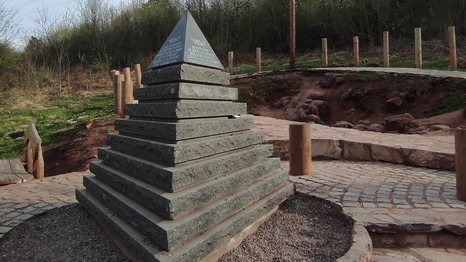

Ртањ
Ртањ је планина која се налази у источној Србији, око 200 km југоисточно од Београда, надомак Бољевца. Припада Карпатским планинама, а највиши врх Шиљак (1565 m) представља природни феномен крашког рељефа. Специфичан распоред стена крашког рељефа није утицао само на биљни покривач, на воде и изворе Ртња, већ и на његов облик.
Географске карактеристике
Ртањ спада у карпатско-балканске планине, нагло се диже из равнице и завршава скоро правилном купом, па многи верују да је и Ртањ пирамида слична онима у суседној Босни. Ртањ је у подножју углавном састављен од пешчара и стена, а у вишим деловима од кречњака. Са јужне стране падови су благи и према подножју се простире висораван која се лагано спушта ка Соко Бањи. На северној страни Ртањ је изразито одсечен са оштрим гребеном при врху. На источном крају гребена, уздиже се главни врх Шиљак. Северна страна планине прекривена је шумама и пашњацима, обрасла аутохтоним биљним врстама и обилује изворима питке воде. У Овом делу се налази и ловиште које се простире на 6368 ha. Најчешћа ловна дивљач су срне и дивље свиње.
У овом планинском систему Србије, Ртањ је издвојени планински масив који има пространу основу, оријентисану странама света. Једна страница је окренута ка југу, док су друге две у положају северозапад и североисток. Из оваквог положаја у склопу карпатско-балканских планина произашао је и састав Ртња (који је у доњим партијама сав од пешчара и филитских стена, док су му виши делови од љутог кречњака, нагриженог временом и атмосферским талозима. Кречњачке стене на Ртњу су толико јак, да су добиле назив најизразитији карст целе Источне Србије. Овакав састав стена и нагиб слојева одредили су и карактер Ртња.
- северна страна је стрма, у горњем карстном делу пуна литица и одсека
- јужна страна, према сокобањској котлини, је много блаже.
- источна страна је са гребеном, из кога се издиже главни оштар врх, права пирамида од кречњака и литица, која се руши у дубину, на север и исток.
Доминантни врхови планине Ртањ, као степенаста-планинска форму, су:
- Шиљак, као централна пирамида,
- Кусак, као обли купасти завршетак заобљеног гребена
- Врх Баба, као елипсоидна, Позиција ових врхова формира са још једном тачком једнакостранични троугао, у чијем центру је Шиљак, под којим се налази
тространа пирамида са истом оријентисаношћу странама света, као и његова троугласта основа. Ивице ове тростране пирамиде, са својим односом углова и страницама, ову планину сврстале у категорију седам светских чуда, као ремек дело природе.
Историја
 Историја Ртња се везује за причу о богатој јеврејској породици Минх која је поседовала параћинску фабрику штофова, а касније и ртањски рудник каменог угља. Јулиус Минх извршио је самоубиство под неразјашњеним околностима, а супруга Грета са Јулиусовом браћом преузела је руковођење рудником. За сећање на свог мужа, Грета је саградила црквицу-капелу на врху планине Ртањ.[8] Цркву је градило 1.000 радника, а освећена је 1936. године.
Историја Ртња се везује за причу о богатој јеврејској породици Минх која је поседовала параћинску фабрику штофова, а касније и ртањски рудник каменог угља. Јулиус Минх извршио је самоубиство под неразјашњеним околностима, а супруга Грета са Јулиусовом браћом преузела је руковођење рудником. За сећање на свог мужа, Грета је саградила црквицу-капелу на врху планине Ртањ.[8] Цркву је градило 1.000 радника, а освећена је 1936. године.
Занимљивости
У подножју Ртња у насељу Ртањ налази се интересантна туристичка атракција Светилиште или Врело (Врело или извор енергије).
Место је елипсастог облика и посећује га велики број туриста. Поред Светилишта постављена је мермерна пирамида . Место је открио инжењер Јован Давидовић.
Испитивања су показала да на Ртњу постоје сталне промене енергетских поља. Према тврдњама овог научника врх планине Шиљак „упија“ позитивну енергију док „Светилиште“ „зрачи“ позитивну енргију.
Постоји веровање да се у „Светилишту“ могу излечити многе болести и да су се својевремено овде лечили римски легионари.
Галерија